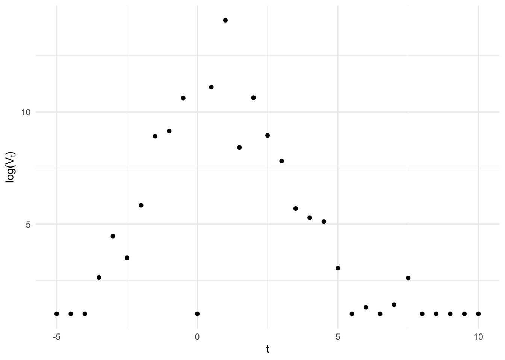

![]()

Recently, I have been working with longitudinal biomarker data that looks something like this:
Viral kinetics fans may notice this looks suspiciously like quantitative PCR results from an acute infection (it is), but for our purposes just note a few salient features:
- a lower limit of detection for the instrument below which the data have been censored,
- classical measurement error around a strong linear rise and fall (on the log scale),
- the possibility for false negatives, due to insufficient or compromised sample collection, and false positives, due to sample contamination.
I was interested in modeling the underlying biological phenomenon under a Bayesian paradigm, but this was both a slightly more complicated measurement error model than I had seen on the online forums and I had some questions about identifiability. So I thought it might make a nice blog post.
The generative model
A few quick preliminaries, let \(V_t\) be the true value of the outcome and \(V^*_t\) the observed value both index by time \(t\) which is centered at the highest observed value. We’ll assume that, within individuals, the trajectory of the true value is well-approximated by the piece-wise exponential function \[ \log V_t = g(t; \theta), \] where \[ g(t; \theta) = \begin{cases} \dfrac{\delta}{\omega_p} (t - (t_p - \omega_p)) & \text{if } t \leq t_p \\ \delta - \dfrac{\delta}{\omega_r} (t - t_p) & \text{if } t > t_p, \end{cases} \] This is essentially a triangle on the log scale with parameters, \(\theta = (t_p, \omega_p, \delta_p, \omega_r)\), governing the time of the peak (\(t_p\)), the peak height (\(\delta_p\)), and the rise (\(\omega_p\)) and fall times (\(\omega_r\)).
We start by including classical measurement error and assume observed values are normal deviates (on the log scale) about the truth, i.e. \[ \begin{aligned} \log V^*_t &= \log V_t + \varepsilon \\ \varepsilon &\sim N(0, \sigma) \end{aligned} \] In reality these errors are probably not homoskedastic, but for now this is a reasonable approximation.
To incorporate the lower limit of detection of the test, we assume values below the limit are censored such that the distribution function becomes \[ f(\log v^*_t ; \log v_t, \sigma) = \begin{cases} \dfrac{1}{\sigma \sqrt{2 \pi}}\exp\left\{-\dfrac{1}{2}\left(\dfrac{\log v^*_t-\log v_t}{\sigma}\right)^2\right\} & \text{if }v^*_t > lod \\ \Phi(\log v^*_t) & \text{if } v^* \leq lod \end{cases} \] where \(\Phi(\cdot)\) is the cumulative distribution function for the normal distribution. Here we assume that \(lod\) is a known fixed value determined by the design of the test and therefore is not a parameter to be estimated from the data. For brevity, we define \(N(\log v_t, \sigma)_{lod}\) to be the distribution with this distribution function.
Finally, we include the possibility of false positive and false negatives by assuming the observed is actually drawn from a mixture \[ f(\log v^*_t ; \log v_t, \sigma) = \begin{cases} p \cdot \dfrac{1}{\sigma \sqrt{2 \pi}}\exp\left\{-\dfrac{1}{2}\left(\dfrac{\log v^*_t-\log v_t}{\sigma}\right)^2\right\} + (1-p)& \text{if }v^*_t > lod \\ \Phi(\log v^*_t) & \text{if } v^* \leq lod \end{cases} \] \[ \log V^*_t \sim \lambda_1 N(\log V_t, \sigma)_{lod} + \lambda_2 Exp(\mu) + \lambda_3 \mathbb I(\log V^*_t = lod) \] where \(\lambda_1\), \(\lambda_2\), and \(\lambda_3\) are the mixture probabilities denoting when the observed is drawn from the censored classical measurement error distribution (\(\lambda_1\)) or is a false positive (\(\lambda_2\)) or a false negative (\(\lambda_3\)). We assume false positives are exponentially distributed with most of the mass near the limit of detection. False negatives will always have observed values at the lower limit of detection, so here we use the Dirac delta function, \(\delta_{V^*_t}(\cdot)\), to represent a point mass at the limit.
functions {
// This function calculates a piece-wise exponential function.
// t: The time variable.
// tp: The peak time.
// wp: The width of the peak.
// wr: The width of the right side of the function.
// dp: The depth of the peak.
real pefun(real t, real tp, real wp, real wr, real dp) {
if (t <= tp) {
return dp / wp * (t - (tp - wp)); // Viral load rises before peak
} else {
return dp - dp / wr * (t - tp); // Viral load falls after peak
}
}
}
data {
int<lower=0> N; // sample size
vector[N] v_obs; // observed outcome
vector[N] t; // time
real lod;
}
parameters {
real dp;
real wp;
real wr;
real tp;
simplex[3] lambda;
real sigma;
}
model {
// PRIORS
beta_t ~ normal(0, 10);
beta_c ~ normal(0, 10);
alpha_t_raw ~ normal(0, 1);
alpha_c_raw ~ normal(0, 1);
// LIKELIHOOD
for (n in 1:N) {
real v = pefun(n, tp, wp, wr, dp);
if (v_obs[n] == lod) {
target += log_sum_exp(
log(lambda),
log1m(lambda) + normal_lcdf(lod | v, sigma)
)
} else {
target += log_sum_exp(
log(lambda[1]) + normal_lpdf(v_obs[n] | v, sigma),
log(lambda[2]) + exponential_lpdf(0 | mu),
log(lambda[3]) + dirac
)
}
}
y ~ normal(alpha + tau * a + beta_t * a + beta_c * (1 - a), sigma_t * a + sigma_c * (1 - a));
}
Reuse
Citation
BibTeX citation:
@online{boyer2024,
author = {Boyer, Christopher},
title = {Bayesian Measurement Error Models for Longitudinal Data},
date = {2024-02-26},
langid = {en}
}
For attribution, please cite this work as:
Boyer, Christopher. 2024. “Bayesian Measurement Error Models for
Longitudinal Data.” February 26, 2024.